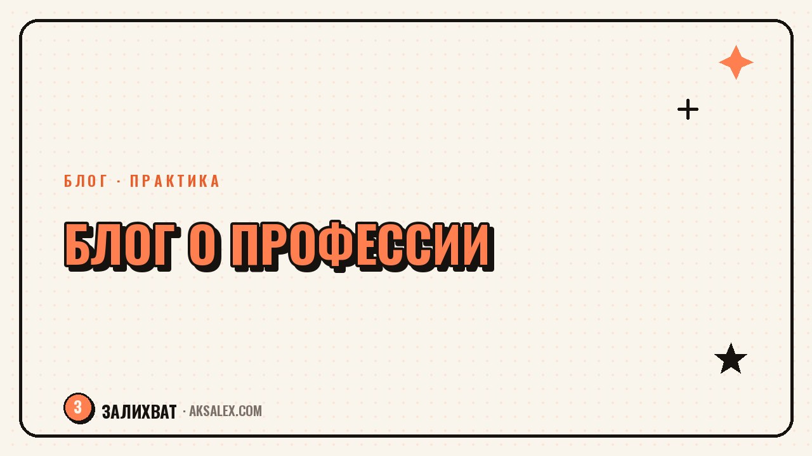

Как вести блог о своей профессии и не быть занудным

Эксперту кажется, что его тема слишком узкая или слишком техничная для блога: кому интересны нюансы бухучёта, стоматологии или ремонта водопровода. На деле аудитория не хочет лекцию по профессии - она хочет узнать, как решить свою конкретную проблему через человека, который в теме разбирается. Разбираем, как показать экспертность без занудства.
Почему эксперту кажется, что его тема никому не интересна
Внутри профессии любая деталь кажется обычной - ты видишь её каждый день и не замечаешь, насколько она непонятна человеку со стороны. Из-за этого возникает страх: напишу про своё дело, а все скажут «кому это надо» или заскучают на третьей строчке.
На деле проблема не в теме, а в подаче. Тема «как считать налоги для самозанятых» звучит сухо, а тема «почему ты теряешь деньги, если платишь налоги неправильно» цепляет того же читателя, но через его страх и выгоду, а не через твою методику.
Что реально отталкивает читателя
- Текст построен как лекция, а не как ответ на вопрос читателя
- Много терминов без перевода на обычный язык
- Нет конкретного человека и ситуации - только общая теория
- Пост написан для коллег, а не для клиента
Как найти свой угол в теме, которую все считают сухой
У любой профессии есть сторона, которая волнует клиентов больше, чем сама методика работы: сколько это будет стоить, что будет, если затянуть с решением, как не нарваться на недобросовестного исполнителя. Начни с этих вопросов, а не с того, как устроена твоя работа внутри.
- Собери 10 вопросов, которые тебе чаще всего задают клиенты, - это уже контент-план на месяц
- Запиши 3 ошибки, которые видишь у клиентов снова и снова
- Вспомни момент, когда клиент удивился очевидному для тебя факту о твоей профессии
- Подумай, чего клиент боится до обращения к тебе
Читателю не нужна твоя методика - ему нужен ответ на его тревогу, который случайно совпадает с твоей методикой.
Форматы, которые оживляют профессиональный контент
Форма подачи решает не меньше, чем тема. Один и тот же факт о профессии можно упаковать в сухую инструкцию или в живую историю из практики - и получить совершенно разную реакцию аудитории.
| Формат | Что показывает | Кому подходит |
|---|---|---|
| Разбор кейса из практики | Как ты решила реальную проблему клиента | Юристам, бухгалтерам, мастерам услуг |
| Ответ на частый вопрос клиентов | Снимает типовое непонимание аудитории | Любой сфере с повторяющимися вопросами |
| До и после или результат работы | Нагляден без объяснения терминов | Визуальным профессиям - дизайн, ремонт, бьюти |
| Разбор мифа в профессии | Снимает заблуждение, которое мешает клиентам | Темам с высоким уровнем страха или недоверия |
Как говорить понятно без потери экспертности
Понятная подача - это не упрощение до примитива, а перевод термина на язык результата. Вместо «провожу диагностику по протоколу» лучше написать «за 20 минут разговора понимаю, в чём настоящая причина, а не только симптом».
Хороший приём - писать текст так, будто объясняешь ситуацию другу, который не в теме, но тебе доверяет. Это убирает канцелярит и возвращает в текст живую речь без потери сути.
Три правила перевода термина
- После термина сразу поясни, что это значит для клиента на практике
- Используй цифры и сроки вместо абстрактных «быстро» и «качественно»
- Сократи предложение, если в нём больше одной сложной мысли
Как не скатиться в занудство на практике
Даже с хорошей темой и живым языком пост может выйти занудным, если в нём нет конкретного героя и результата. Правило ясного текста: каждый абзац должен двигать мысль, а не повторять предыдущий другими словами.
- Заканчивай пост конкретным выводом, а не общим «берегите себя, профессионалы»
- Убирай абзацы, которые объясняют то же самое, что уже было сказано
- Чередуй формат: инструкцию - кейсом, кейс - мифом, миф - вопросом аудитории
- Перечитывай текст вслух перед публикацией - там, где скучно слушать, скучно и читать
Частые вопросы
С чего начать блог о своей профессии, если кажется, что тема слишком узкая?
Начни со списка вопросов, которые реально задают клиенты, - это уже и есть твоя тема в правильной формулировке. Узкой темы не бывает, бывает неудачная подача через методику вместо результата для клиента.
Как не превратить блог о профессии в лекцию для коллег?
Пиши для клиента, а не для специалиста из твоей же сферы - переводи термины на язык результата и убирай детали, важные только внутри профессии. Если текст написан для коллеги, он автоматически выглядит занудным для обычного читателя.
Как показать экспертность, если язык стал понятнее?
Экспертность показывают конкретика и результат, а не сложность формулировок. Точные сроки, цифры и разбор реального кейса убеждают сильнее, чем длинный термин без перевода.
Что делать, если все посты в блоге выходят одинаковыми по формату?
Чередуй форматы осознанно: инструкция, разбор кейса, развенчание мифа, ответ на вопрос аудитории. Разная форма подачи одной темы снимает ощущение, что блог превратился в методичку.
Можно ли использовать нейросеть, чтобы текст звучал живее?
Да, нейросеть хорошо помогает переформулировать канцелярит в разговорную речь и сократить длинные предложения. Финальный тон и примеры из практики всё равно лучше оставить своими - именно они делают блог живым.
Раз тема оказалась полезной, вот что почитать следующим. Нейросети для репетитора: как готовить уроки, проверять домашку и находить время на живых учеников.
Читать статью →а не вручную